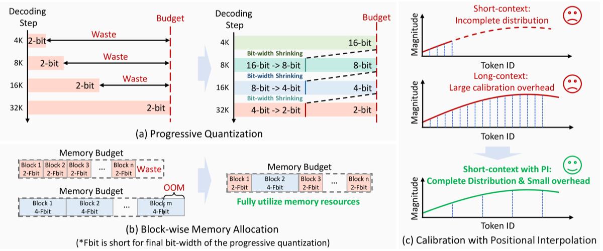

Why it matters왜 중요한가
For reasoning LLMs the bottleneck is not the weights — it is the ever-growing KV cache that fixed low-bit quantization quietly destroys.
추론 LLM의 병목은 가중치가 아니라, 고정 저비트 양자화가 조용히 망가뜨리는 끝없이 커지는 KV 캐시다.
Most KV-cache quantizers were designed for short contexts (<8K tokens). Applied to long-CoT models that emit tens of thousands of tokens, two things break. First, quantizing every decoding step to a fixed 2-bit width injects error at each step that accumulates catastrophically — and memory sits half-empty early in generation, so the aggressive low bit-width is needlessly wasteful. Second, RoPE makes some Key channels low-frequency: they only reveal their full distribution over 32K+ tokens, so calibrating outlier-handling on 512–2048-token snippets is a mismatch. PM-KVQ reframes the problem as spending the memory budget intelligently over time and across blocks, rather than picking one bit-width up front.
대부분의 KV 캐시 양자화기는 짧은 컨텍스트(<8K 토큰)용으로 설계됐다. 수만 토큰을 내뱉는 long-CoT 모델에 적용하면 두 가지가 무너진다. 첫째, 매 디코딩 단계를 고정 2-bit로 양자화하면 단계마다 오차가 들어가 치명적으로 누적되고, 생성 초반엔 메모리가 절반쯤 비어 있어 공격적 저비트가 불필요한 낭비다. 둘째, RoPE 때문에 일부 Key 채널은 저주파라 32K+ 토큰에서야 분포 전체가 드러나는데, 512~2048 토큰 조각으로 아웃라이어 처리를 캘리브레이션하면 불일치가 생긴다. PM-KVQ는 이 문제를 사전에 비트폭 하나를 고르는 게 아니라 메모리 예산을 시간·블록에 걸쳐 똑똑하게 쓰는 문제로 재정의한다.

By the numbers핵심 숫자
at same memory budget동일 메모리 예산에서
SOTA 대비 최대 정확도 향상
(64.79 vs 51.88, AIME-24)2-bit 70B pass@1 vs KIVI
(64.79 vs 51.88, AIME-24)
(DeepSeek-R1 distills)평가한 모델 규모
(DeepSeek-R1 distill)
tested실험한 KV 캐시
비트폭
Right-Shift (pass@1)Equivalent vs Direct
Right-Shift (pass@1)
8192-tok calibrationPI 배율: 2048 토큰 →
8192 토큰 캘리브레이션
Results — holding up under 2-bit결과 — 2-bit에서도 버틴다
| Model / Bench | 16-bit | KIVI | PM-KVQ | Δ vs KIVI |
|---|---|---|---|---|
| 70B · AIME-2024 (pass@1) | 69.14 | 51.88 | 64.79 | +12.91 |
| 14B · CMIMC-2024 (degr.) | — | −21.87 | −1.87 | +20.00 |
| <10B · voting (avg gain) | — | base | +15.56 | +15.56 |
| 10–32B · voting (avg gain) | — | base | +17.78 | +17.78 |
In one diagram한 장의 그림
The three ideas세 가지 아이디어
Progressive Quantization
Don't quantize to 2-bit from step 1. Keep the KV cache at 16-bit, then shrink (16→8→4→2-bit) as memory fills, using an Equivalent Right-Shift — an integer add+shift that re-quantizes losslessly in dynamic range. This beats Direct/Modified shift by +26.25% / +9.58% pass@1.
1단계부터 2-bit로 양자화하지 않는다. KV 캐시를 16-bit로 유지하다 메모리가 차면 축소(16→8→4→2-bit)하는데, 등가 우측 시프트(정수 덧셈+시프트로 동적범위 손실 없이 재양자화)를 쓴다. Direct/Modified 시프트보다 pass@1 +26.25% / +9.58% 우수.
Mixed precision + PI calibration
An integer-programming solver (Taylor sensitivity, solved in seconds via CVXPY) gives sensitive blocks more bits. For calibration, positional interpolation (e.g. s=4) makes a 2048-token sample mimic an 8192-token context, capturing low-frequency RoPE channels without O(N²) cost: +1.66% pass@1.
정수계획법 솔버(테일러 민감도, CVXPY로 수 초 내 해결)가 민감한 블록에 더 많은 비트를 준다. 캘리브레이션은 위치 보간(예: s=4)으로 2048 토큰 샘플이 8192 토큰 컨텍스트를 흉내 내, O(N²) 비용 없이 저주파 RoPE 채널을 포착: pass@1 +1.66%.
How it works어떻게 작동하나
- Profile sensitivity (pre-inference)민감도 프로파일링(추론 전)Estimate each transformer block's KV-cache sensitivity to b-bit quantization via a first-order Taylor approximation using loss gradients w.r.t. the Key/Value caches.Key/Value 캐시에 대한 손실 기울기로 1차 테일러 근사를 써, 각 트랜스포머 블록이 b-bit 양자화에 얼마나 민감한지 추정.
- Solve the bit-allocation IP비트 배분 IP 풀기Minimize total sensitivity subject to a memory budget M, choosing each block's final bit-width (Fbit) from an option set — solved by CVXPY in seconds.메모리 예산 M 제약 하에 총 민감도를 최소화하도록 옵션 집합에서 블록별 최종 비트폭(Fbit) 선택 — CVXPY로 수 초 내 해결.
- Calibrate with positional interpolation위치 보간으로 캘리브레이션Apply channel-wise reparameterization for outliers, but scale RoPE positions (s>1) so short calibration data simulates a long context — no extra compute or memory.아웃라이어용 채널별 재매개변수화를 적용하되 RoPE 위치를 스케일(s>1)해 짧은 캘리브 데이터가 긴 컨텍스트를 모사 — 추가 연산·메모리 없음.
- Decode progressively점진적 디코딩Start at 16-bit; as the budget fills, apply equivalent right-shift to drop each block down to its allocated Fbit, keeping precision high for as long as possible.16-bit로 시작; 예산이 차면 등가 우측 시프트로 각 블록을 할당된 Fbit까지 낮춰, 가능한 한 오래 고정밀 유지.
What to take away그래서, 가져갈 것
Time-aware budgeting beats fixed bit-width. Keeping early tokens high-precision and shrinking only on demand cuts cumulative error — up to +8% over SOTA at the same memory.
고정 비트폭보다 시간 인지형 예산 배분. 초반 토큰을 고정밀로 두고 필요할 때만 축소하면 누적 오차가 줄어 — 같은 메모리에서 SOTA 대비 최대 +8%.
2-bit becomes usable. Where RotateKV/MiKV collapse to ~0% at 2-bit, PM-KVQ keeps a 70B distill at 64.79 pass@1 (vs 69.14 full).
2-bit가 쓸 만해진다. RotateKV/MiKV가 2-bit에서 ~0%로 붕괴하는 반면 PM-KVQ는 70B distill을 pass@1 64.79(원본 69.14)로 유지.
RoPE matters for calibration. Positional interpolation lets short calibration data stand in for long contexts, sidestepping the O(N²) cost of true long sequences.
캘리브레이션에 RoPE가 중요. 위치 보간으로 짧은 캘리브 데이터가 긴 컨텍스트를 대신해, 실제 긴 시퀀스의 O(N²) 비용을 우회.
Lightweight to set up. The mixed-precision allocation is a small integer program solved in seconds — practical as a pre-inference step.
설정이 가볍다. 혼합정밀도 배분은 수 초 내 풀리는 작은 정수계획 — 추론 전 단계로 실용적.